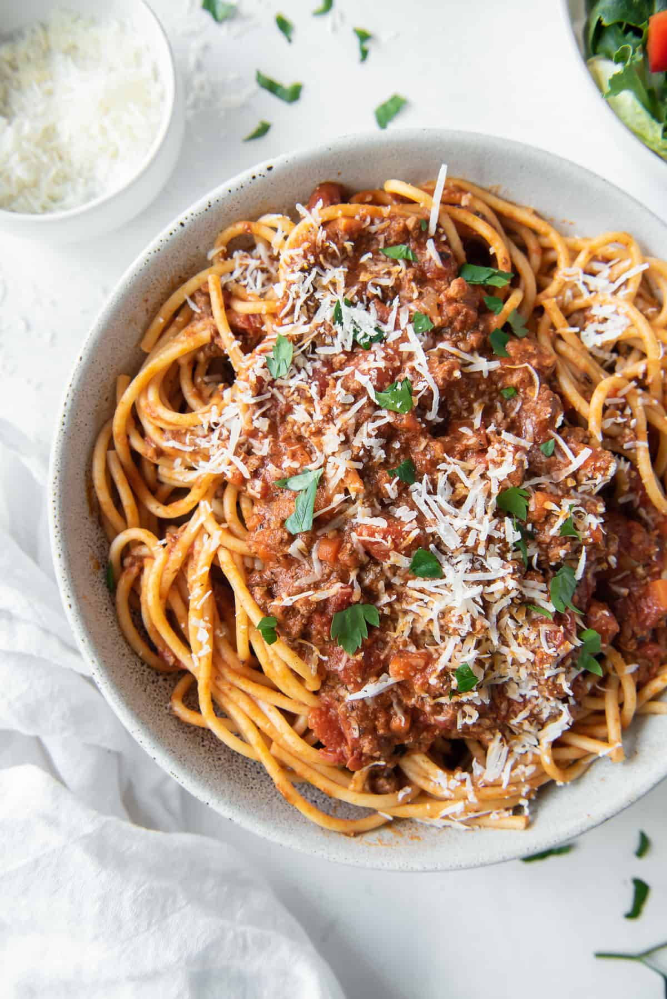

Pasta bolonjese

Description
Brown the beef in a large frying pan for 5 mins, then throw in the mushrooms and soften for 3 mins. Stir in the garlic and sun-dried tomato purée and cook for 2 mins. Add the tomatoes, wine or stock, dried herbs and seasoning. Bring to the boil, then simmer for 10 mins.
While the sauce is simmering, cook the pasta as per pack instructions, drain, then serve with the sauce and torn basil leaves scattered on top.
Ingredients
1bsp olive oil.
rashers smoked streaky bacon, finely chopped.
medium onions, finely chopped.
2 carrots, trimmed and finely chopped.
2 celery sticks, finely chopped.
2 garlic cloves finely chopped.
2-3 sprigs rosemary leaves picked and finely chopped.
500g beef mince.
Steps
- Boil Water. Start with a very large pot of water, about 6 quarts per pound of pasta.
- Add Salt. Put in a lot of salt, about 3 tablespoons.
- Add the Pasta.
- Stir
- Taste the Pasta.
- Drain.
- Removing Ravioli.
- Stir In the Sauce.